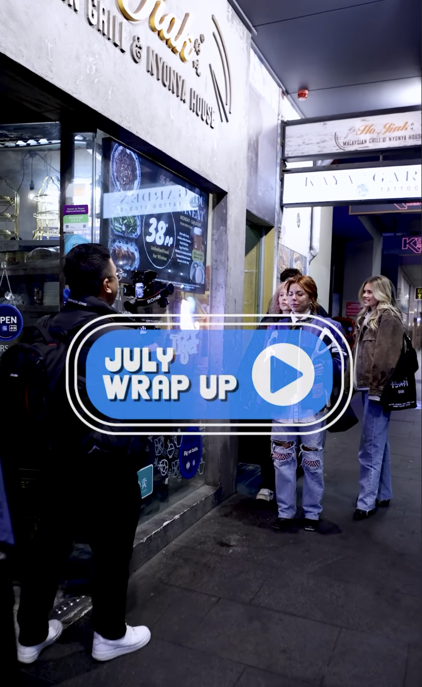

24th Day
Today I went how to go through and take note of a style guide. Secondz have a style guide designed by good ideas studios and my boss wanted me to see it so I learnt the consisted style they wanted throughout the brand.I achieved understanding how a style brand works for a brand and what design stuff its important to lay out/would be required. I contributed by learning requirements for my next design task for the promotional videos of secondz.
25th Day
Today I finished the July Recap video and also did some footage annotation of there "Where the F is this series" episode 2. My boss gave me some reviews of clips to change over and to colour grade differenely. I learnt how to speed up my editing work flow and achieved a finialised july recap for secondz and contributed to it being posted on their instagram (which I was tagged in!!)
Link to Final Instagram Reel26th Day
Worked on the July recap video. Understood the importance of having good clips and cutting down clips to be an engaging length. Also the importance of making it sync to the tempo of the music. I achieved a senxe of satifisation as I love editing the recap videos and I contributed further work to the video.